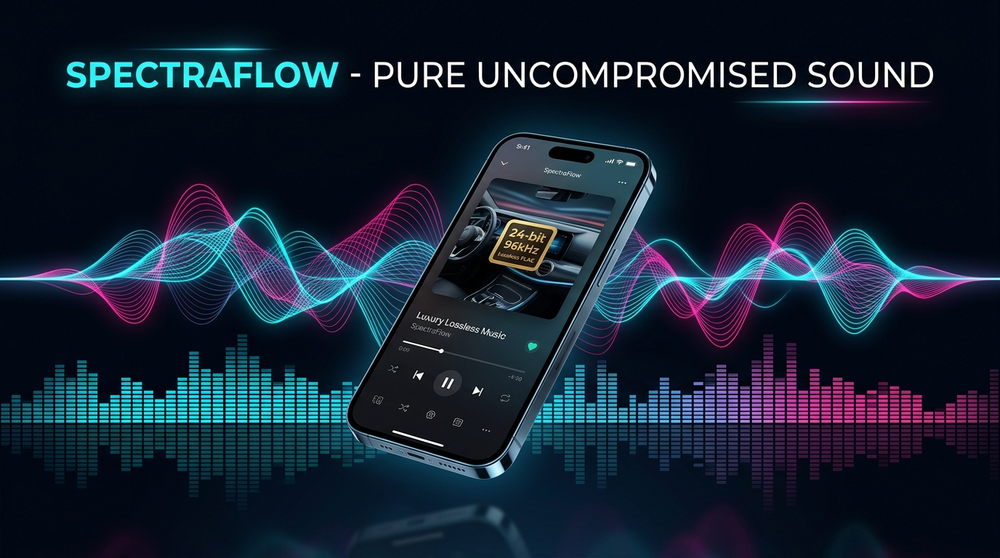

Studio Sound.
Zero Compromise.
Scroll down to tilt the phone in 3D space, expand the acoustic soundwaves, and ignite the real-time audio spectrum.

4K Studio Master & Dynamic Holographic Visualizer
Engineered For Acoustic Superiority
How SpectraFlow outclasses conventional Android & iOS streaming apps
Direct Bit-Perfect Hardware Routing
Bypasses Android's mandatory 48kHz downsampling mixer via native floating-point AudioTrack rendering. Your 24-bit / 96kHz and 192kHz master files reach your DAC uncompressed.
Vehicle Acoustic Matrix (Pioneer & Alpine)
Pre-calibrated cabin reflection DSP, harmonic exciters, and sub-bass shelf filters engineered specifically to punch through road noise and compensate for off-axis car speakers.
Dual Persona: Classic vs. Studio
One master switch: casual users enjoy Spotify-like 1-tap presets and auto-volume normalization; audio enthusiasts get full 10-band parametric EQ, Q-factor, and live format metrics.
Be First In Line for the Private Beta
Source code is currently in private development. Star the creator profile on GitHub to receive the v1.0 release APK and desktop build.